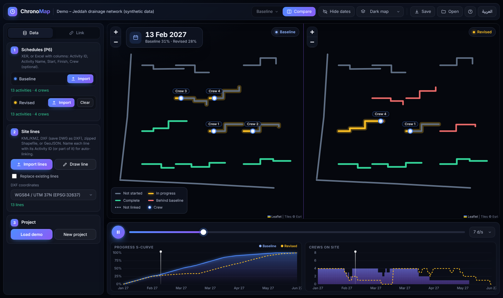

Everyone is looking at the same schedule. Nobody is seeing the same project.
Picture a typical progress meeting on a linear project. The planner presents the updated programme. The client asks which streets will be open next month. The consultant asks why a line has slipped. The site engineer asks where his crews should move after the current section.
That gap is one of the most expensive, and least discussed, problems in project controls. ChronoMap is the approach I developed to close it.
The problem is not the schedule. It's how we read it.
Primavera P6 is a powerful engine. For a planner, its activities, logic and float are the project. For almost everyone else, the activity list is a wall of text. A Gantt chart tells you when something happens. It rarely tells you where.
On a building, that gap is small. On linear works (roads, pipelines, drainage networks and utilities spread across a city) "where" is the whole story:
- Which street is closed, and for how long?
- Which crew is on which line, and where does it go next?
- If one permit or utility clearance is late, which areas actually move?
Definition
A Digital Twin is a live copy of the asset. ChronoMap is a live copy of the plan.
How it works: four layers
The result answers questions an activity list cannot: where will we be working next month, which areas move if a permit slips, and can the site realistically deliver this recovery scenario, crew by crew?
Where ChronoMap sits
Visual planning has strong roots. ChronoMap borrows the location-based mindset, uses the real site layout instead of a BIM model, plays the actual P6 programme, and opens in any browser or phone.
| Approach | The question it answers |
|---|---|
| Line of Balance / TILOS | Which crew is where, and when? |
| 4D BIM / Navisworks | How will the structure go up? |
| Digital Twin | What is the condition of the asset now? |
| ChronoMap | What does the plan look like on the ground, day by day? |

Case studies
Stormwater drainage programme, Jeddah
Recovery and revised programmes played on the real project layout. Each crew moves along the street it is scheduled to work on, while the schedule and crew histogram run on the same clock. Baseline and revised play side by side, with the delay event marked on the progress curves, so the client, consultant and site team read the impact the same way.
Wadi Al-Lith Dam: ChronoMap in 3D
The same principle applied to a dam: the revised programme played on a 3D model of the valley. The dam rises layer by layer on the scheduled dates, work sites and delays appear where they happen, and any element can be opened to see the activities behind it.
The honest limits
- P6 stays the contractual reference. Delay analysis, extension of time, float and the critical path still live in the activity logic. The map is a layer on top, not a replacement.
- Bad data looks convincing. A clean ChronoMap built on poor progress updates misleads faster than a table. Site data quality matters more, not less.
- Not every project needs it. The value is highest where location is the challenge: roads, pipelines, utilities and works inside live cities.
The shift: from building the schedule to deciding with it
Modern tools now handle much of the mechanical side of planning. What they cannot do on their own is know that a permit will be late because an authority hasn't responded, or which recovery scenario a site can actually deliver. The planner's value is moving from maintaining a list of activities to making sure everyone, from the foreman to the client, is looking at the same project.
How to cite
Full working paper (PDF, open access, CC BY 4.0): DOI 10.5281/zenodo.23882941
The ChronoMap name, method description, text, videos and images on this page are the work of Mostafa Magdy ElAws. © 2026. All rights reserved.
ChronoMap: منهج تخطيط قائم على الخريطة
الجميع ينظر إلى البرنامج الزمني نفسه، لكن لا أحد يرى المشروع نفسه.
ChronoMap منهج تخطيط يُربط فيه كل نشاط في البرنامج الزمني بالمقطع الفعلي الذي يمثله على مخطط الموقع الحقيقي، ويشغّل خط زمني واحد البرنامج على هذه الخريطة يومًا بيوم، فيقرأ الجميع الخطة حسب المكان وليس الزمن فقط.
التوأم الرقمي نسخة حية من الأصل. أما ChronoMap فهو نسخة حية من الخطة. ويتكون من أربع طبقات:
- البرنامج الزمني: يبقى برنامج P6 هو المرجع الأساسي، ولا يُعاد التخطيط خارجه.
- الموقع: يُربط كل نشاط بالمقطع الفعلي على مخطط الموقع، وهذا الربط هو قلب المنهج.
- الساعة: خط زمني واحد يحرّك كل شيء: حالة المقاطع، وحركة الفرق، ومنحنى الإنجاز.
- المقارنة: تشغيل البرنامج الأساسي والمعدّل جنبًا إلى جنب على نفس الخريطة والساعة.
| الأسلوب | السؤال الذي يجيب عنه |
|---|---|
| خط التوازن / TILOS | أي فرقة في أي موقع، ومتى؟ |
| 4D BIM / Navisworks | كيف سيُبنى المنشأ؟ |
| التوأم الرقمي | ما حالة الأصل الآن؟ |
| ChronoMap | كيف تبدو الخطة على الأرض، يومًا بيوم؟ |
المؤلف: مصطفى مجدي العوص، مدير التخطيط والمخاطر، PMP. نُشر لأول مرة في 1 نوفمبر 2026، جدة، المملكة العربية السعودية.